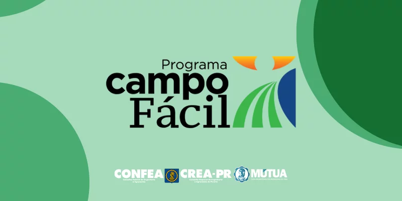
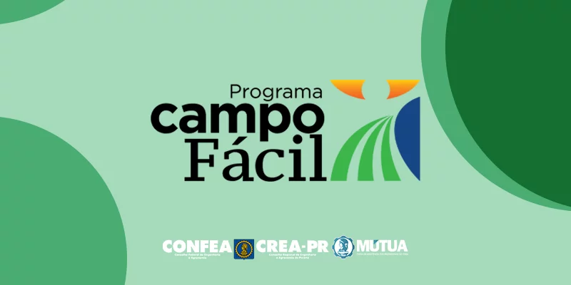

Entendendo a Importância do Agro Paranaense
A agricultura desempenha um papel crucial em nossa sociedade, fornecendo alimentos, gerando empregos e impulsionando a economia. No entanto, muitas vezes, informações equivocadas podem obscurecer a realidade do setor. Este site busca desmistificar alguns dos mitos mais comuns, apresentando fatos e dados que conectam o campo à cidade de forma transparente e informativa, com foco no estado do Paraná.
Explore os mitos abaixo e descubra as verdades por trás deles:
Mito: Agrotóxicos são sempre prejudiciais à saúde
O Mito
A crença comum é que todo e qualquer agrotóxico representa um perigo iminente para a saúde humana e o meio ambiente.
A Verdade
A realidade é mais complexa. Existem regulamentações rigorosas sobre o uso de defensivos agrícolas, com limites máximos de resíduos permitidos nos alimentos. A ciência busca garantir que, dentro desses limites e com o uso correto, os riscos sejam minimizados. Além disso, há um crescente investimento em práticas de manejo integrado de pragas e em alternativas agroecológicas.
Mais Detalhes
Explore estudos científicos e regulamentações de órgãos como a ANVISA e o Ministério da Agricultura sobre o uso de agrotóxicos.
- Link para um estudo sobre o monitoramento de resíduos em alimentos.
- Informações sobre as classes toxicológicas de agrotóxicos.
Mito: A agricultura é a principal responsável pelo desmatamento
O Mito
Muitos acreditam que a expansão da agropecuária é a maior causa da destruição de florestas e outros biomas.
A Verdade
Embora a agropecuária possa ser um fator de pressão, o desmatamento é um problema multifacetado com diversas causas, incluindo a exploração ilegal de madeira, a mineração e a expansão urbana. A agricultura moderna também busca práticas sustentáveis e a recuperação de áreas degradadas. É importante analisar dados específicos de cada região para entender as causas predominantes do desmatamento.
Participação Setorial no Desmatamento (Exemplo)
Fonte: Dados fictícios para ilustração.
Mito: Alimentos orgânicos são inacessíveis para a maioria da população
O Mito
Existe a percepção de que produtos orgânicos são sempre muito mais caros e, portanto, um privilégio de poucos.
A Verdade
Embora alguns produtos orgânicos possam ter um preço mais elevado devido aos métodos de produção e escala, a agricultura familiar e as feiras agroecológicas têm contribuído para tornar esses alimentos mais acessíveis. Além disso, o custo-benefício a longo prazo para a saúde e o meio ambiente deve ser considerado.
Onde Encontrar Orgânicos Acessíveis

 

Por Dentro do Agro
Explore as práticas, tecnologias e a importância da agricultura moderna para a nossa sociedade...
A agricultura de precisão utiliza tecnologias como GPS, sensores e drones para otimizar o uso de insumos, aumentar a produtividade e reduzir o impacto ambiental. Isso permite um manejo mais eficiente da lavoura, com aplicações de fertilizantes e defensivos em taxas variáveis, de acordo com a necessidade de cada ponto da área cultivada.
Benefícios incluem a redução de custos, o aumento da produção e a diminuição do impacto ambiental.
Práticas como o plantio direto, a rotação de culturas e o manejo integrado de pragas são exemplos de como a agricultura pode ser mais sustentável. O plantio direto, por exemplo, mantém a palhada sobre o solo, protegendo-o contra a erosão e melhorando a sua estrutura. A rotação de culturas ajuda a quebrar o ciclo de pragas e doenças e a melhorar a fertilidade do solo.
A sustentabilidade no agro busca conciliar a produção de alimentos com a preservação dos recursos naturais.
A biotecnologia oferece diversas ferramentas para a agricultura, como o desenvolvimento de plantas mais resistentes a pragas, doenças e condições climáticas adversas. As sementes geneticamente modificadas (OGMs) são um exemplo, embora seu uso seja tema de debate e regulamentação.
A biotecnologia também contribui para o desenvolvimento de biofertilizantes e biopesticidas, alternativas mais sustentáveis aos produtos químicos tradicionais.
Conexão Campo-Cidade no Paraná
Descubra como o campo e a cidade se complementam e se beneficiam mutuamente no Paraná...
Pontos de Conexão Agrícola no Paraná
Clique nos marcadores para mais informações.
Sobre Nós
Este site foi desenvolvido como um projeto para o concurso Agrinho, com o objetivo de desmistificar alguns conceitos sobre a agricultura e fortalecer a compreensão da importante conexão entre o campo e a cidade.
O desenvolvimento foi realizado por João Othávio Oenning, um estudante do ensino médio com interesse em programação e na temática do agronegócio.